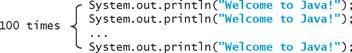

5.1 Introduction
A loop can be used to tell a program to execute statements repeatedly.
Suppose that you need to display a string (e.g., Welcome to Java!) a hundred times. It would be tedious to have to write the following statement a hundred times:
problem

So, how do you solve this problem?
Java provides a powerful construct called a
loop that controls how many times an operation or a sequence of operations is performed in succession. Using a loop statement, you simply tell the computer to display a string a hundred times without having to code the print statement a hundred times, as follows:
loop
int count = 0;
while (count < 100) {
System.out.println("Welcome to Java!");
count++;
}
The variable count is initially 0. The loop checks whether count < 100 is true. If so, it executes the loop body to display the message Welcome to Java! and increments count by 1. It repeatedly executes the loop body until count < 100 becomes false. When count < 100 is false (i.e., when count reaches 100), the loop terminates and the next statement after the loop statement is executed.
Loops are constructs that control repeated executions of a block of statements. The concept of looping is fundamental to programming. Java provides three types of loop statements: while loops, do-while loops, and for loops.